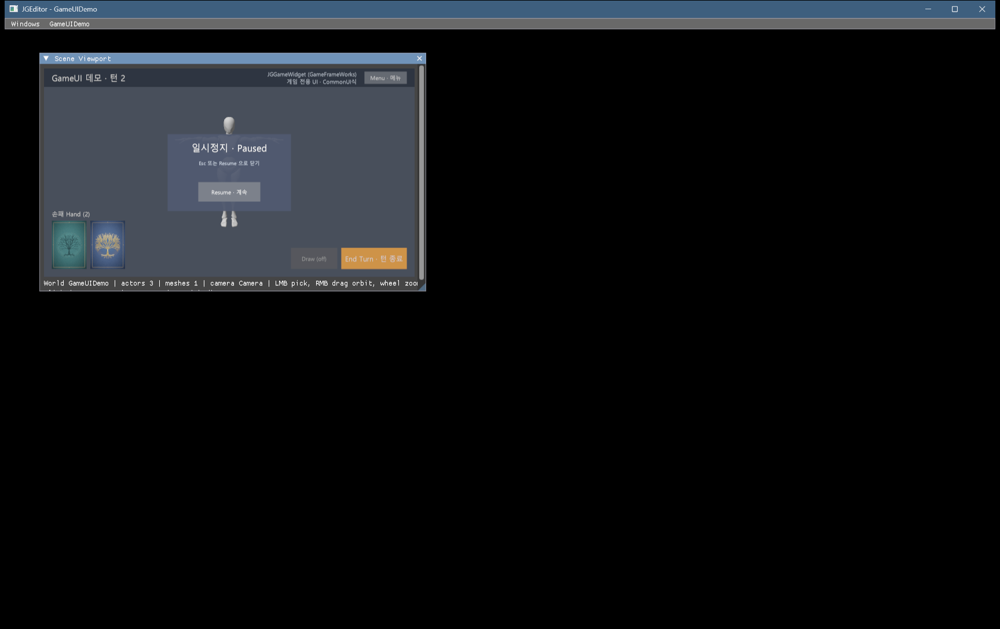
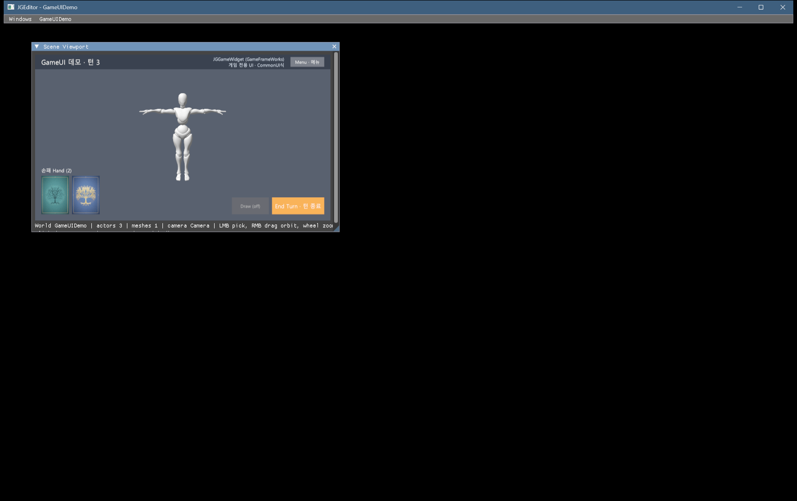
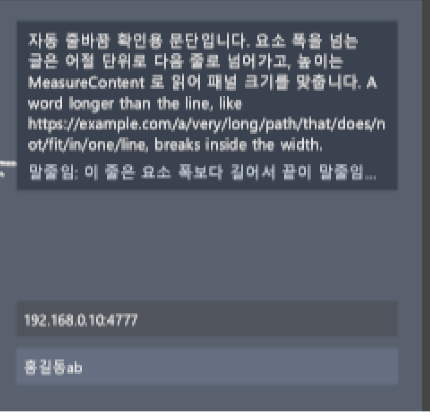

게임 UI 진행 보고
요약. 어젯밤 만든 별도 GameGUI 모듈을 없애고 게임 UI를 GameFrameWorks 안 UI/로 옮겼습니다. 이제 게임 화면은 JGGameWidget을 상속해서 만듭니다. 에디터의 JGWidget처럼 클래스로 만들고, 언리얼 CommonUI의 ActivatableWidget처럼 동작합니다. 관리자 PGameUIManager는 JGGameInstance가 가지며, 레이어 스택 · 입력 라우팅 · 뒤로가기 · 기본 스타일을 맡습니다.
결과. 헤드리스 셀프 테스트 111/111. 검증용 게임(HUD + 일시정지 메뉴)을 에디터에서 띄워 실제 입력 10단계를 보냈습니다. Menu 버튼으로 메뉴가 열리면 HUD 버튼과 월드 클릭이 막혔고, Esc로 메뉴가 닫혔으며, 닫힌 뒤에는 HUD와 월드가 다시 입력을 받았습니다. 비활성 버튼은 눌러도 반응하지 않았습니다. 기존 회귀도 모두 통과했습니다. 본 트리에 반영해 빌드 오류 0을 확인했습니다.
남은 일. 커밋(사용자)과, 본 트리 엔진을 쓰는 기존 게임 프로젝트의 배치 2 재실행입니다(GameGUI 프로젝트가 없어졌습니다). 포커스 이동 · 탭 · 게임패드는 고르신 대로 다음으로 미뤘습니다.
gameui.selftest: 스택 수명 · 라우팅 · 뒤로가기 · 비활성 · 스타일 · 레이아웃 · 글꼴UI/ 새 파일 + 수정 파일(GFW 4 · GUI 3 · JGEditor 3 · JGConsole 1). 옛 GameGUI 24파일 삭제1. 화면
검증용 게임 GameUIDemo입니다. HUD 위젯은 Game 레이어에, 일시정지 메뉴 위젯은 Menu 레이어에 올라갑니다.


색이 코드 값보다 옅게 보이는 것은 출력이 FP16 선형 값이라 sRGB로 바뀌기 때문입니다(ImGui와 같음, Graphics D-3).
2. 구조
레이어 4개가 있고 레이어마다 스택이 하나 있습니다. 그리기는 아래 레이어부터, 입력은 위 레이어부터 받습니다. 아래 예는 메뉴가 열린 상태입니다.
| 구성 | 역할 |
|---|---|
JGGameWidget | 화면 하나(JGCLASS). 게임이 상속합니다. 훅: OnInitialize(트리를 한 번 만듦), OnActivated / OnDeactivated(스택 맨 위가 되거나 덮일 때), OnUpdate(dt), OnBackAction(기본: 자기를 닫음), OnShutdown. 설정: SetInputMode(Game/Menu), SetBackHandler, DeactivateWidget() |
PGameUIManager | JGGameInstance::Get().GetUI(). PushWidget<T>(레이어)로 올리면 같은 스택의 이전 화면이 비활성이 됩니다. 빼면 아래 화면이 다시 활성이 됩니다. 입력 라우팅, 뒤로가기, 기본 스타일, 글꼴 · 텍스처를 맡습니다. 월드를 바꿔도 유지됩니다. |
| 요소 · 스타일 | 이미지 · 글자 · 버튼(앵커 · 피벗 배치). 버튼은 스타일(보통 · 호버 · 누름 · 비활성 색, 라벨 스타일)을 쓰고, 정하지 않으면 관리자 기본 스타일을 씁니다. 글자는 정한 필드만 덮어쓰고 나머지는 기본을 따릅니다. SetEnabled(false)로 끈 요소는 반응하지 않지만 아래 클릭을 막습니다. |
| 호스트 | 에디터 Scene Viewport가 월드 위에 그리고, 마우스를 먼저 넘깁니다(UI가 받으면 월드 피킹 · 카메라 조작 없음). 창에 포커스가 있을 때 Esc를 뒤로가기로 넘깁니다. |
| 그대로 둔 것 | Graphics 2D 그리기 경로(렌더링 기반), ImGui GUI 모듈(에디터 전용) |
3. 쓰는 법
// 게임 모듈의 화면 (JGCLASS 헤더 하나에 하나)
JGCLASS()
class JGMyPauseMenu : public JGGameWidget
{
JG_GENERATED_CLASS_BODY
protected:
virtual void OnInitialize() override
{
SetInputMode(EGameWidgetInputMode::Menu); // 떠 있는 동안 아래 · 월드 입력 차단
SetBackHandler(true); // Esc 로 닫힘
PSharedPtr<PGameUIButton> resume = AddChild<PGameUIButton>(PName("Resume"));
resume->SetLabel(PString("Resume"));
resume->OnClicked.AddLambda([this]() { DeactivateWidget(); });
}
};
// 열기 (HUD 버튼 클릭 등에서)
JGGameInstance::Get().GetUI()->PushWidget<JGMyPauseMenu>(EGameUILayer::Menu);
// 게임 모듈 ShutdownModule: 게임이 만든 화면을 먼저 내린다
JGGameInstance::Get().GetUI()->ClearAllWidgets();전체 예: Memory/GameFrameWorks/Files/tools/gameui_demo_testgame/(HUD · 일시정지 메뉴 · 모듈 · 검증 스크립트 · README). 따로 연결할 UI 모듈은 없습니다(GameFrameWorks 하나).
4. 검증
| # | 방법 | 결과 |
|---|---|---|
| V1 | JGConsole.exe gameui.selftest(GPU 없이). 옛 검사 64개에 스택 수명(훅 순서) · 레이어 순서 · Menu 차단 · 클릭 처리기 안에서 닫기 · 뒤로가기(처리 · 막힘 · 아래로 넘김) · 비활성 · 스타일 상속을 더했습니다 | 111/111 워크트리 · 본 트리 모두 |
| V2 | 검증 게임을 에디터에서 실행하고 런처 창에만 PostMessage로 입력: End Turn → Menu → (메뉴 상태에서) End Turn · 빈 곳 → Esc → End Turn → 빈 곳 → 비활성 Draw → Menu → Resume | 통과 턴 2 → 메뉴 열림 → 두 클릭 모두 막힘(턴 그대로, 피킹 없음) → Esc로 닫힘 → 턴 3 → 월드 피킹 → Draw 반응 없음 → 메뉴 열고 Resume으로 닫힘. 오류 0, 종료 0, 메모리 블록 0 |
| V3 | gmtest · console.selftest · net.test all, 프로젝트 없는 런처 | 통과 156 · 64 · 101, 런처 종료 0 · 오류 0 · 메모리 블록 0 |
작업 방식: 본 트리를 다른 세션들이 고치고 있어서 격리 워크트리에서 구현 · 검증한 뒤 반영했습니다. 제가 고친 11개 파일은 그사이 아무도 바꾸지 않았음을 해시로 확인했습니다. 같은 시각 레이아웃 복원 작업을 하던 JGEditor 세션과는 메시지로 파일이 겹치지 않음을 확인했습니다.
5. 알아둘 것
| 항목 | 내용 |
|---|---|
| 검증 스크립트 | 첫 V2 실행에서 Menu 버튼 클릭이 빗나갔습니다. 엔진 문제가 아니라 스크립트 문제였습니다. 화면 위치를 주황 버튼 높이로 역산했는데, 높이가 1~2픽셀 덜 잡혀 작은 버튼을 놓쳤습니다. 렌더 타깃 비율(16:9)로 계산하게 고친 뒤 통과했습니다. |
| 리드백 회귀 | JGEditor 세션이 오늘 09:07에 DevFeature 시작 열기를 지워서, 프로젝트 없는 런처는 이제 DevScene 리드백 PNG를 만들지 않습니다. 그 검사는 지금 돌지 않습니다(그 세션의 변경이고 제 작업과는 무관합니다). |
| 게임 위젯 수명 | 위젯 클래스는 게임 DLL에 있습니다. 게임 모듈 종료 때 ClearAllWidgets()로 먼저 내리는 것을 권합니다(엔진도 게임 인스턴스 종료 때 남은 위젯을 내립니다). |
| 한계 | 호스트는 에디터 Scene Viewport 하나뿐입니다(단독 실행은 D-5). 포커스 이동 · 탭 · 게임패드 · 드래그 · 자동 줄바꿈 · 데이터 레이아웃 · 트윈은 보류 표 GG-H1~H16에 다시 볼 조건과 함께 있습니다. |
6. 할 일
- 커밋 사용자가 합니다. 새 파일
Source/Runtime/GameFrameWorks/UI/24개와Source/Shader/draw2d.hlsl(미추적)이 빠지지 않게 해 주세요.SceneViewport.h/.cpp는 JGEditor 이관(E-1)으로 새로 생긴 파일이라 함께 들어가야 합니다. 목록은Memory/GameFrameWorks/TODO_GameUI.md커밋 체크리스트에 있습니다. - 게임 프로젝트 본 트리 엔진을 쓰는 기존 게임 프로젝트는
GenerateProjectFiles.bat을 다시 돌려야 합니다(GameGUI 프로젝트가 없어졌습니다).
7. 문서 위치
- 설계:
Memory/GameFrameWorks/Files/GameUI_설계_2026-10-01.md - TODO(완료 GG-0~7 · 보류 GG-H1~H16 · 커밋 체크리스트):
Memory/GameFrameWorks/TODO_GameUI.md - 현황(코드 위치 · 함정 · 검증 방법):
Memory/GameFrameWorks/현황.md§10 - 검증 기록:
Memory/GameFrameWorks/Files/2026-10-01_GameUI_GFW_verify.txt - 새벽의 별도 모듈안(이력):
GameGUI_진행보고_2026-10-01.html,Memory/Etc/Files/GameGUI_설계_2026-09-30.md
8. 낮 추가: 자동 줄바꿈 · 글자 입력 (ER-007 · ER-008)
요약. 게임 프로젝트(ProjectAH)가 요청한 두 기능을 검토서 권고대로("진행시켜") 넣었습니다. 글자 요소는 요소 폭에서 줄을 바꾸고(단어 · 글자 방식), 높이를 읽을 수 있고, 잘라내기 · 말줄임을 합니다. 새 요소 PGameUITextInput은 한 줄 입력란입니다. 누르면 키보드 · IME 확정 글자를 받고, Enter로 게임 코드에 문자열을 넘깁니다.
결과. 헤드리스 검사 193/193(줄바꿈 38 · 입력 44 추가). 검증 게임에서 실제 입력 20단계가 통과했습니다. 주소 칸에 192.168.0.10:47771x를 넣으면 'x'는 버려지고, Backspace 뒤 Enter로 게임이 192.168.0.10:4777을 받았습니다. 이름 칸에서는 홍길동ab를 받았습니다. 입력 중 Esc는 포커스만 풀었고, 다음 Esc부터 뒤로가기로 갔습니다. 본 트리에 반영해 빌드 · 회귀 · 런처를 다시 확인했습니다.
남은 일. 실제 한글 IME로 한 번 입력해 봐 주세요(ㅎ → 하 → 한). 조합 창이 입력란 커서 옆에 떠야 합니다. 스크립트는 확정 글자까지만 확인할 수 있습니다. 그다음은 커밋입니다.

MeasureContent로 맞췄습니다. 긴 주소는 단어 안에서 바뀝니다. 그 아래 줄은 말줄임입니다. 입력란 두 개(주소 · 이름, 이름 칸이 포커스).| 기능 | 쓰는 법 · 동작 |
|---|---|
| 줄바꿈 | text->SetWrap(EGameUITextWrap::Word) — 공백에서 바꿉니다. 한글은 어절 단위, 한자 · 가나는 글자 사이, 줄보다 긴 단어는 그 안에서 바꿉니다. Character는 아무 글자 사이에서 바꿉니다. 닫는 부호(, . ) 」 …)는 줄 첫머리에, 여는 부호는 줄 끝에 오지 않습니다. 기본은 None(예전과 같음) |
| 높이 | text->MeasureContent(600.0f, GetManager()) → 글 상자 크기(논리 단위, 높이 = 줄 수 × 줄 간격). 줄 나누기를 논리 단위로 하므로 화면 해상도가 달라도 같은 자리에서 바뀝니다 |
| 잘라내기 · 말줄임 | SetClip(true), SetMaxLines(n) + SetEllipsis(true)(잘린 끝에 "…"). None + 말줄임은 폭을 넘는 한 줄을 줄입니다 |
| 입력란 | AddChild<PGameUITextInput>(...), SetPlaceholder · SetMaxLength(글자 수) · SetAllowedCharacters("0123456789.:"), 이벤트 OnCommitted(Enter) · OnTextChanged. 스타일 HGameUITextInputStyle(관리자 기본 있음) |
| 키 | ← → Home End(Shift로 선택) · Backspace · Delete · Ctrl+A/C/X/V · Tab(같은 화면의 다음 입력란) · Enter(확정) · Esc(포커스 해제만). 다른 곳을 누르거나, 입력란이 입력을 못 받게 되면(위에 메뉴가 뜨거나 화면이 닫힘) 포커스가 풀립니다 |
| 한글 IME | 조합 중 글자는 OS 조합 창이 입력란 커서 옆에 뜹니다(ImGui 입력란과 같은 방식). 확정된 글자가 들어갑니다 |
| 호스트 · GUI | Scene Viewport 창에 포커스가 있을 때만 키보드가 게임 UI로 갑니다. 그때 ImGui 키보드 내비게이션이 방향키 · Tab · Enter를 쓰지 않게 키 소유권을 가져옵니다. GUI에 편집 키 · 글자 큐 · IME 위치 · 클립보드 함수를 더했습니다(추가만) |
| # | 검증 | 결과 |
|---|---|---|
| V1 | gameui.selftest: 줄바꿈(방식별 줄 · 폭 · 공백 · 긴 단어 · 부호 규칙 · 최대 줄 · 말줄임 · 측정 · 배율 0.5 / 0.667 / 1 · 잘라내기), 입력(포커스 · 해제 · 한글 · 제어 문자 · 편집 키 · 선택 · 최대 길이 · 허용 문자 · Tab · Enter · Esc · 메뉴에 가려짐 · 커서 자리 · 가로 밀기 · 깜빡임 · 자리 글) | 193/193 워크트리 · 본 트리 |
| V2 | 검증 게임 실제 입력 20단계(기존 10 + 주소 입력 · Backspace · Enter · 한글 이름 · 입력 중 Esc · 다음 Esc) | 통과 워크트리 엔진 · 본 트리 엔진 두 번, 오류 0 · 종료 0 · 메모리 블록 0 |
| V3 | gmtest · console.selftest · net.test all, 프로젝트 없는 런처(D3D12 메시지) | 통과 92+64 · 64 · 101, 런처 종료 0 · D3D12 메시지 0 |
| 알아둘 것 | 내용 |
|---|---|
| 빌드 | 워크트리가 임시 폴더 아래에 있으면 MSBuild가 헤더 변경을 추적하지 않습니다. 첫 증분 빌드는 옛 오브젝트가 남아 셀프 테스트가 접근 위반으로 죽었습니다(디버거로 원인 확인). 전체 다시 빌드로 해결했고, 코드 문제는 아니었습니다. 본 트리에는 해당하지 않습니다. |
| 검증 스크립트 | 첫 V2에서 한글 이름이 깨졌습니다. 스크립트가 ANSI판 PostMessageA로 글자를 보냈기 때문입니다. 유니코드판(W)으로 고친 뒤 통과했습니다. 엔진 문제는 아니었습니다. |
| 공유 파일 | GUI.h/.cpp/GUIDefines.h는 같은 날 DevConsole 세션도 고쳤습니다. 3-way로 합쳤고 그쪽이 확인했습니다. SceneViewport · GFW 파일은 그사이 아무도 바꾸지 않았습니다(해시 확인). |
| 1차 범위 밖 | 여러 줄 입력 · 비밀번호 가림 · 조합 중 글자를 입력란 안에 그리기 · 끌어 선택 · 되돌리기 · 이모지 · 스크롤 영역 · 리치 텍스트. 보류 표 GG-H3 · GG-H17~H24에 다시 볼 조건과 함께 있습니다. |
- 확인 실제 한글 IME 입력 한 번(GG-9U). 본 트리 Bin의 에디터에서 검증 게임이나 ProjectAH를 열고 입력란에 한글 이름을 쳐 봐 주세요.
- 커밋 새 파일
UI/GameUITextInput.h/.cpp가 늘었습니다(UI/26개). 목록은Memory/GameFrameWorks/TODO_GameUI.md커밋 체크리스트입니다. - 문서: 검토서
Memory/GameFrameWorks/Files/ER-007_ER-008_검토_2026-10-01.md, 검증 기록Memory/GameFrameWorks/Files/2026-10-01_GameUI_ER007_ER008_verify.txt. ProjectAH 요청서 두 건은 상태를 "반영"으로 바꾸고 쓰는 법을 적었습니다.